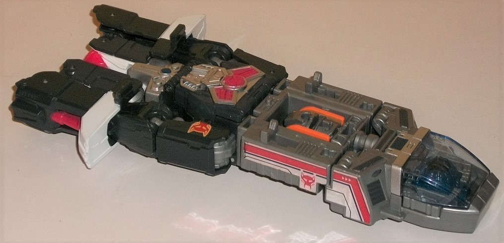
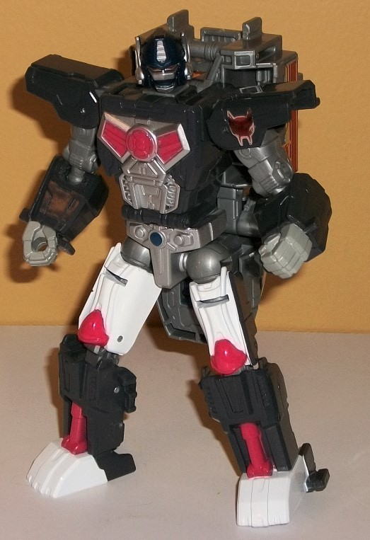
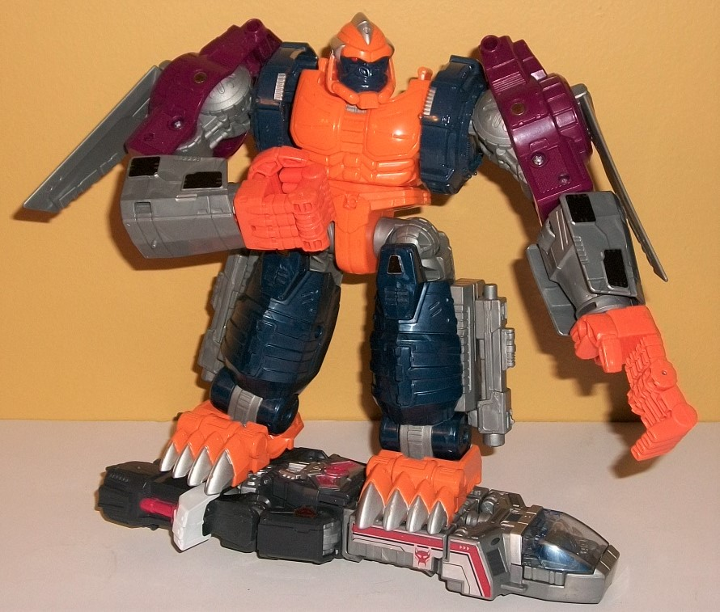
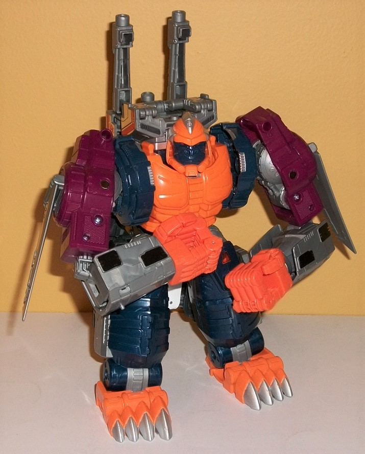
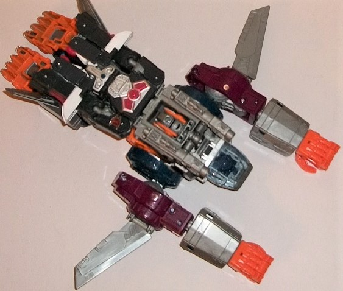
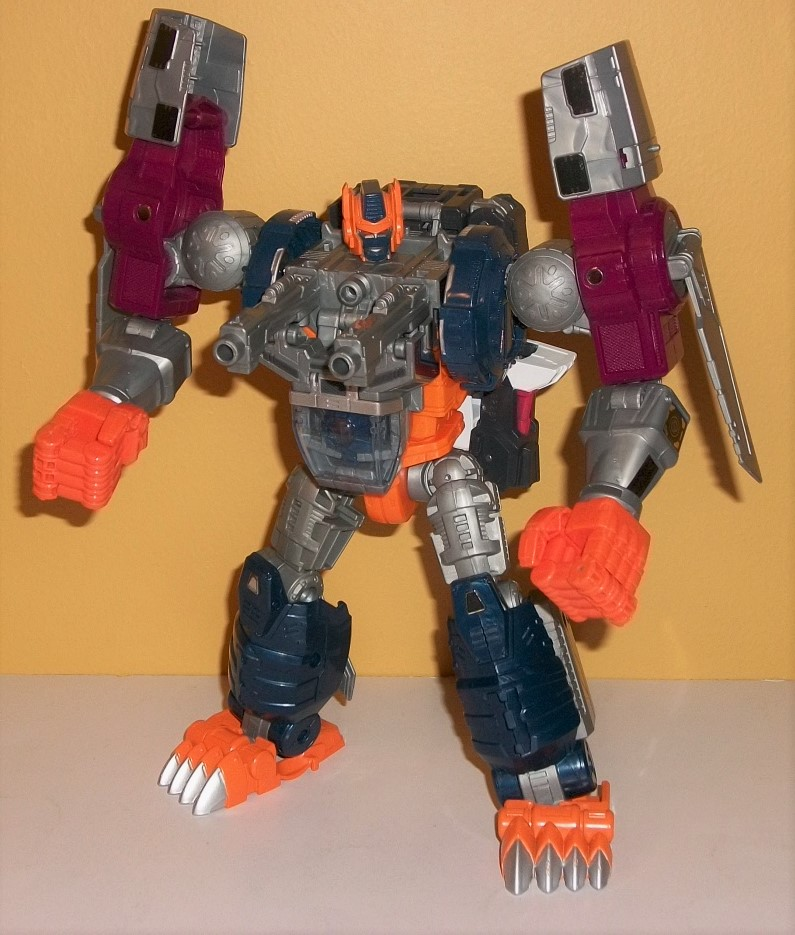

Allegiance
: Maximal
Size
: Leader
Difficulty of Transformation to Optimus
Primal's Robot Mode
: Easy
Difficulty of Transformation to Optimal
Optimus' Robot Mode
: Easy
Color Scheme
: Milky moderately light
gray, charcoal black, dark milky navy blue, light orange, dull fuchsia,
and some silver, white, moderately light red, dark glossy navy blue, and
transparent pale blue
Rating
: 7.4



Optimus Primal/Optimal
Optimus was the "fan vote" pick for the last "Evolution" Leader-class toy
of the PotP line, hence why he seems a little out-of-place and is the only
Maximal in the entire line. To make the whole "Evolution" gimmick, er...
work, Hasbro kinda changed Optimus Primal's alt mode. Now he's a spaceship/hoverboard
thing. In this mode, Primal looks... well... pretty darn poor. It's pretty
blatantly just the entire robot mode folded up on the back end, while the
front end is a LITTLE better, with Optimal's chest-cockpit forming the
cockpit for this alt mode while there's a gray section behind it that is
pretty obviously the top of Optimal Optimus' robot mode, with the head
folded away. The stripes of orange on the side of the headsculpt in the
middle of this section are kind of a dead giveaway, even ignoring the fact
it doesn't fit shape-wise with the larger rectangular hole in the top surrouding
it. Honestly, you REALLY have to squint to see this as any sort of spaceship--
the cockpit in the front is the only part that looks vehicle-y. That said,
the mold detailing is pretty decent, with vents and ridges scattered quite
profusely over the front half of this mode. The cockpit can open up and
inside is a Matrix accessory, which you can take out and replace the center
with a Prime Master to give Primal a different "Prime Power". I like how
this placement fits with the explanation for Optimal Optimus in the
Beast
Wars
show-- that putting the matrix in him turned Primal into Optimal
Optimus, and the cockpit is where he stored the Matrix for about an episode.
The back end of this mode has some angular and circular details on the
top area that obviously becomes Primal's robot chest, as it's molded to
look pretty much exactly like his chest details, but more mechanical and
without an organic aspect to it. Same with the mechanical ab and crotch
details. The rest of the back portion is surprisingly un-detailed for a
Generations toy, with very few details beyond some pistons on the sides
and very basic shapes. There's not even thrusters molded into the back
end to make it look like this thing can propel itself. There's some foil
stickers-- some angled red-and-silver stripe details on the sides of the
front half with a Maximal symbol on the sides, and another Maximal symbol
sticker on the piece that becomes the left shoulder of the robot mode.
I rarely like foil stickers, though for allegiance symbols I don't mind
them much. However, given that on the sides the stripes go between two
separate pieces that often rotate past each other during transformation,
this means the edges of them can become a bit worn down, which is one of
the primary reason I despise stickers for decos like this. Outside of the
stickers, the front half of this mode is mostly a fairly light milky gray,
which-- although not the most exciting color-- isn't that bad, being dark
enough to look like some kind of metal, unlike the really light bland gray
plastic that's used often on other TFs. The back half is mostly a charcoal
black-- not QUITE a pure black, but honestly this is one of the few cases
I think this "impure" black works better. Why? Because Optimus Primal's
alt mode has traditionally been a realistic gorilla, who is black but not
THAT dark shade of black. Black and gray don't technically clash, but the
way they're used here-- the black entirely on the back half, the gray entirely
on the front half-- makes it even more obvious the back half is Primal's
robot mode. There's some pale transparent light blue plastic on the cockpit
window and Matrix, and some silver on the back portion that becomes the
robot chest and abs. Some light red is used on the parts that become the
abs, as well as on the pistons on the rear sides. White is used on the
side pieces that become Primal's robot feet, and there's a little bit of
dark blue in the middle of the crotch. Overall, he's got a decent amount
of colors here, but they're just not at all arranged in an aesthetically
pleasing manner.
It's pretty darned obvious
how to transform Optimus Primal into his "normal" robot mode-- just unfold
the body and arms from the back end, open up the chest and fold out the
head before re-closing it again, and then fold down the cockpit section
behind his back. Unfortunately this means that Primal has a REALLY big
backpack in this mode, reaching down all the way to his knees and sticking
out from the sides of his body a bit, as well. Definitely an eyesore! At
least it tabs in securely back there. However, if you can accomplish the
herculean task of ignoring that big hunka plastic hanging off of him, the
rest of his robot mode is pretty good and proportional, looking very much
like a "roboticized" version of his
Season 1 Beast
Wars design
. He's got angular shoulders, arms that look more like roboticized
ape arms (complete with gray on the hands), and legs with white-and-red
paint on the upper legs, as well as the aforementioned red paint on the
ankle pistons and white on the feet. There's actually a few organic-like
lines molded into the upper legs, giving Primal at least that tiny hint
of organic-ness in this mode. As already mentioned, the details on his
chest and pelvis also mimic his Season 1 BW design pretty well, and his
headsculpt is spot-on, being dark blue and very Optimus Prime-like, but
with more curved antennae, a more circular forehead, and a slit in the
faceplate for his mouth. He's got silver paint on the forehead vent, side
antennae, and most of his face excluding the mouth, with some red paint
on his eyes. Although he's rather back-heavy, Primal has some pretty good
articulation; he can move at the neck, shoulders (at two points), elbows,
hips (at two points), and knees (at two points). For weapons, the instructions
show Primal using the two guns from Optimal Optimus as clubs, which is
kinda... weird, but I guess it's better than nothing.
As for the "armor",
it forms basically all of Optimal Optimus' gorilla mode. Just like the
original
Optimal Optimus
toy, the proportions are
just vaguely gorilla-like-- the legs are a bit too long, and obviously
the upper robot legs are just folded up behind the lower legs. The arms
are not as bulky as they should be when compared to the original toy, particularly
from a frontal view. Optimal Optimus is supposed to be a big, beefy guy.
He doesn't look so much like that in this mode, even with the armored up
bits on his lower arms. His main body is fairly proportional, though due
to the "evolution" gimmick it's all a front-- the inside is hollow, along
with the back side, and this can be seen a bit by noting there's not much
mass behind Optimal's gorilla head. Still, all of the essential details
for Optimal Optimus are here, as he's covered with little vents, decorative
armor panels, bolts, and the like all over his arms and legs. His huge
gorilla feet with painted silver nails is present, and his hands-- while
not QUITE as overly huge as on the original toy-- are still pretty big,
with all the digits molded in quite accurately to how they appeared in
the show. The chest looks a bit more organic, with a "ripped" feel to it,
and is rather curvy with some pec details. His headsculpt is pretty spot-on,
with some silver headcrests on the sides but an otherwise round head with
a fairly large chinstrap and a dark blue monkey face, complete with large
nostrils and tiny red eyes. The color scheme for this mode is pretty much
taken right from the original toy, but with the vacuum-metallized plastic
gone. It may not look as snazzy out-of-the-box, but it's not prone to chipping
either, so there's that. Anyway, Optimal has a rather unique color scheme
of a very dark, milky navy blue on the lower legs and part of the shoulders;
fuchsia on the upper arms; light orange on the main body, feet, and hands;
and some milky gray on the lower arms, wing bits, what becomes the upper
legs in robot mode, and the interior of his upper arms. Again, I'm not
that huge a fan of the gray, but it's better than the lighter shades of
the color commonly used on other TFs. I love how the orange and blue contrast
with each other, and the fuchsia also works with the blue to boot. I wish
there was a tad less of the gray overall, but generally it's a unique color
scheme that, while not jaw-dropping, looks pretty nice overall. Beyond
the aforementioned paint apps on the face, there's not much paint in this
mode; some silver on small parts of the blue part of the shoulders, silver
and orange on the feet, and a couple of foil stickers. They're small, however;
just small Maximal allegiance symbols on the fuchsia upper arms, little
"bolt plates" on the knees, and some black foil stickers on the lower arms.
Since they're not used much and are small, I don't mind them, and honestly
Optimal's color scheme is varied enough where even the relative lack of
paint apps doesn't really bother me (though a few more on the lower arms
and legs certainly would've been appreciated). In this mode, Optimal can
move at the neck (at two points), shoulders (at three points), elbows (at
two points), wrist rotation, the base of each thumb, the base of the four
fingers on each hand (all as one piece), waist rotation, at the hips (at
three points), and ankles (at two points), this making him pretty articulate,
excepting the lack of knees. It's also worth nothing that Optimal has the
gun accessories plugged in at the side of his lower legs, where they're
generally stored if they're not being actively used as weapons.



There are two ways you
can "augment" Optimal's gorilla mode using Optimus Primal's core robot.
One is just to have the gorilla ride Primal's alt mode like a hoverboard--
there are two clips to hold them securely to each other, one on each foot--
and it's a really cool allback to Optimus Primal's
Transmetal
"vehicle mode", which is cool since that form of his is not otherwise overtly
called out on this toy. You can also combine Optimus Primal onto Optimal's
back, attaching the two gun blasters from the legs to the front and folding
up a few parts to essentially make him look like the original toy's gorilla
mode-- i.e., with a more "complete" main body with the guns and backpack
section on his upper back. Unfortunately, though this "fills out" the body,
because Optimus Primal's entire robot mode hangs off the end of this backpack,
it makes for a LARGE piece of kibble behind Optimal's back in this mode.
Additionally, if you want those guns to point forward, you have to tilt
a large section of the backpack forward, which-- without any additional
support-- doesn't look good.
Just like on the original
toy, you can transform Optimal Optimus into his (pretty weak) "jet mode",
which is pretty much just his gorilla mode with the arms pointed up, the
feet folded up, and then the Optimus Primal vehicle mode slapped on top
with the cockpit folded down a bit and the gun accessories plugged in at
the top. The original toy had it basically looking like he was playing
"Superman" in a similar pose, but with the gorilla head replaced with a
cockpit, and unfortunately that's how it looks here too-- only with the
addition of that "Primal robot mode backpack" that I mentioned last paragraph,
which means that whole section clashes with the legs of the Optimal portion
of the toy, making it look a bit of a mess back there. Since this is the
vehicle mode where it makes the most sense for Optimal to "carry" others,
it's worth mentioning there are three pegs on the toy for Prime/Titan Masters
to stand on-- one on each of his arm armor bits, as well as one behind
the folded-down Optimal head on the top middle section. Overall though,
best to just ignore this mode, in my opinion. (And no, he doesn't have
the ground transport mode this time, as he has no wheels-- and really,
that was just a slight variation of this mode anyways. I don't miss it.)
For the combined "Optimal"
robot mode, the upper legs from the gorilla mode are folded out, the waist
rotated around, the armor panels from the lower arms relocated above the
shoulders to make his shoulders protrude even higher, his arms rotated
out a bit more at the shoulders and his shoulders slid up, and then Optimus
Primal's vehicle mode essentially folded "around" the top of of the body,
with the cockpit now as the chest and the midsection at the top with the
Optimal robot head flipped up on top-- the whole extra piece held on by
two strong clips, so thankfully Optimal doesn't come apart here pretty
much unless you want him to. Optimus Primal's folded-up robot mode is still
sadly hanging of the back, though given Optimal's taller in this mode and
bulked out a little more, it's not quite as obnoxious. Optimal's headsculpt
is pretty spot-on show-accurate, with a very Prime-like "helmet" with side
antennae and a strong central forehead vent, but with a mouth in the middle
of his faceplate. The helmet itself is painted light orange, with red eyes,
a dark blue forehead and mouth guard, and silver rims around his eyes and
mouth. The cockpit chest can either sit with the top flush with the top
of the body, or you can fold it down slightly to attach the two gun accessories,
in a show-accurate move to give him some firepower in this mode, complete
with a third faux "targeting system" hole in the center of the chest to
mimic the electronic gimmick from the original toy (though of course, since
this toy doesn't have electronics, it doesn't work here). Other than the
main body, as was my complaint with the original toy, this toy isn't different
enough from the gorilla mode. Yes, the upper legs are now fully folded
out, making him a bit more proportional, and the armor panels moved from
the lower arms to the shoulders make his arms a bit leaner, but it's still
more-or-less the gorilla mode, streamlined a bit. Heck, he has basically
the same articulation as in gorilla mode, just with knee articulation now
(though his waist rotation is a bit more restricted because of the Primal
backpack). Still, taken by itself this is definitely the toy's best individual
mode, with the backpack being the only particularly noticeable downside--
otherwise he's pretty poseable and generally well-proportioned, given the
toy they were emulating. With the armor bits moved up to the shoulders,
two new foil stickers are visible on the lower arms on the sides, showing
simple mechanical details (though the backside of these lower arm bits
is now horribly hollow). The mold detailing on the upper legs is pretty
well-done, too, though the "revealing" of these robot parts gives Optimal
a bit more gray than in gorilla form, which I don't think looks quite as
good (though it's still not
bad
).
Overall, while I quite
appreciate the nod to Beast Wars fans with this release (and the whole
"Fan Vote" thing in general)-- and that all three of Optimus Primal's Beast
Wars forms are at least nodded at here-- functionally, this just isn't
that great of a toy. Optimal Optimus was always too simple of a Transformer
for the size, with his two modes looking far too similar (and he's simplified
even more here), and although Optimus Primal's robot mode looks great (minus
the backpack), the changing of his alt mode to a spaceship-board... thing...
and the minimal integration with the Optimal parts beyond the top of the
robot mode unfortunately makes this one of the easiest PotP toys to pass
up.
Review by Beastbot